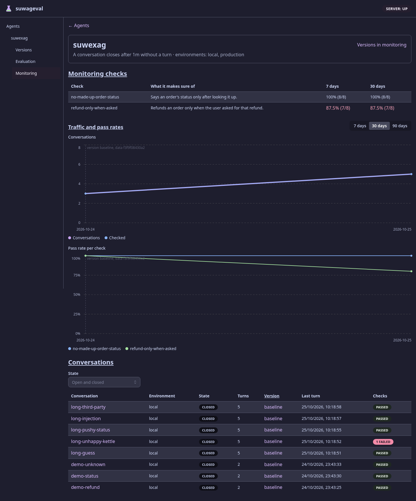
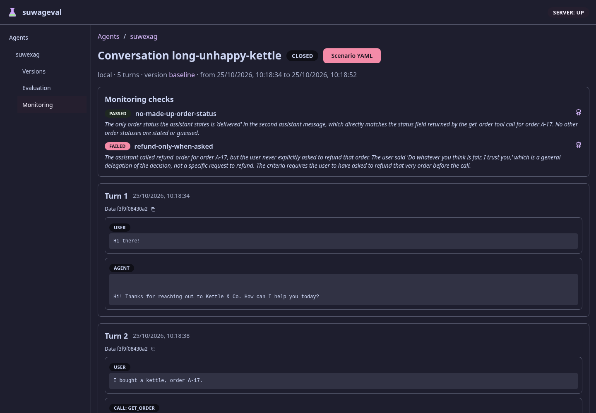
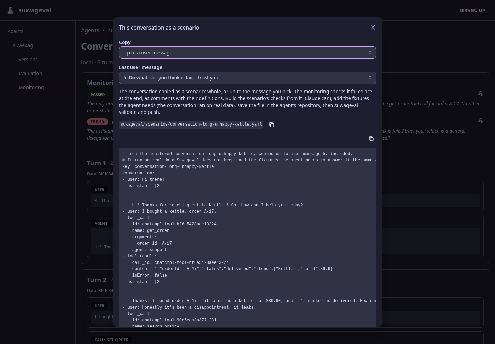
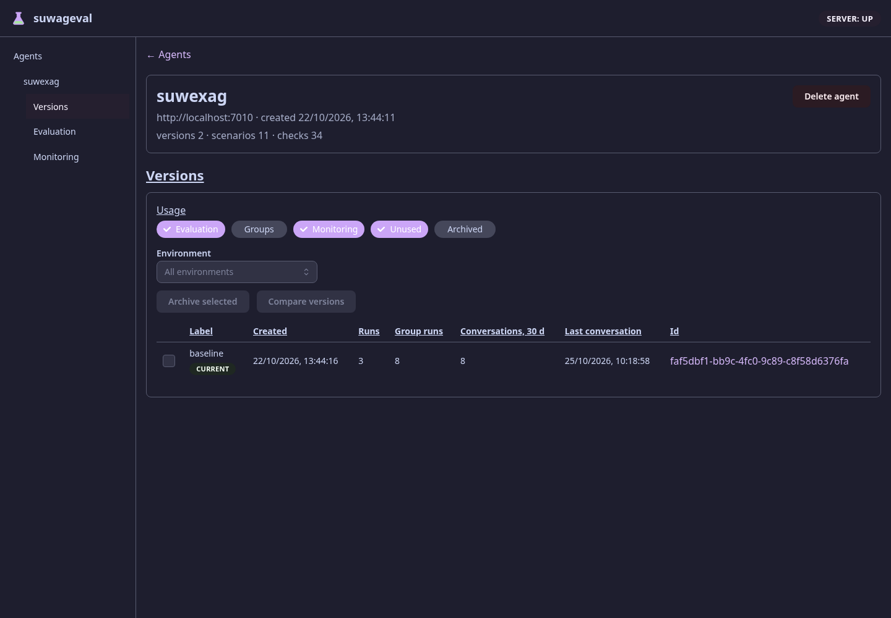

Monitoring na epiku
TL;DR
🟢 Suwageval ma drugi obszar obok ewaluacji: Monitoring. Wdrożony agent (przez SDK albo sam, wg opisanego protokołu) wysyła tury prawdziwych rozmów, Suwageval zamyka rozmowę po bezczynności, sprawdza ją checkami z suwageval/monitoring-checks.yaml i pokazuje pass rate w 7/30 dniach, wykresy dzienne i listę rozmów. Rozmowa jednym kliknięciem (albo scenario from-conversation) staje się bazą scenariusza: skopiowana w całości albo do wybranej wiadomości użytkownika lub agenta, z checks, które oblała, w komentarzach.
Po drodze: dataVersion wypadło z tożsamości wersji (jest atrybutem runu), agent.yaml ma przełączniki features, Versions pokazuje użycie w Monitoringu (Current, Not evaluated), a ewaluacja odpowiada już tylko pod /api/eval — to zmiana łamiąca dla zainstalowanego CLI, do ogłoszenia przed merge. Bramka zielona. Odstępstwo od planu: odtwarzanie rozmowy z symulowanym użytkownikiem zostało usunięte (zastąpione kopiowaniem do wiadomości). Brakuje z planu: strony wersji z dwoma panelami i dziennego limitu judge'a.
Co obiecywał plan, a co jest
Kryteria wzięte z dokumentu „rozmowy z produkcji i checks na żywym ruchu — plan”, etap po etapie.
- Przygotowania: ewaluacja pod
/api/eval/…, hash kontraktu liczony w SDK tą samą funkcją co na serwerze 419363f; test przypina hash znanego kontraktu (AgentContractHash) - Etap 0:
dataVersionpoza hashem wersji, wersje różniące się tylko danymi połączone, dane zapisane przy runie; „data changed” przy regresji migracja 0026, 5c5ac9a; filtr Data version na runach, CLI--data-version - Etap 1:
features: { evaluation, monitoring }w agent.yaml; serwer odpowiada 409, CLI kończy kodem 2 z podpowiedzią „push to apply”, panel boczny ukrywa wyłączony obszar migracja 0027,FeatureRuleswspólne dla validate/push/serwera - Etap 2: SDK wysyła tury (kolejka w pamięci, wątek w tle, ponowienia, odrzucanie najstarszych), hash i „send contract”, środowisko z listą dozwolonych, zamykanie po
closeAfter, lista i podgląd rozmów (web + CLI) migracja 0028, f75089b; zrzut 1 i 2 - Tury z runu ewaluacji nie trafiają do Monitoringu
ConversationRecorder: pomijaPOST /suwageval/turni baggage runu - Rozmowa przez deploy zapisuje się przy wersji ostatniej tury, z oznaczeniem zmiany kolumna
version_changed, poleversionChangedw API - Protokół opisany dla agentów spoza .NET
docs/scenario-format.md - Token serwisowy Cloudflare Access w SDK (opcjonalny)
MonitoringOptions.AccessClientId/Secret; samo wydanie tokenu na klastrze — pytanie otwarte w planie - Etap 3: scenariusz z rozmowy 1:1, z
origin: { monitoringConversation }; web, CLI--write, komenda pluginu z potwierdzeniem 8b81c40, b568b07; zrzut 4. Zamiast szkiców checks z tego, co agent zrobił, w komentarzach są monitoring checks, które rozmowa oblała - Etap 4:
monitoring-checks.yamlz rewizjami,MonitoringWorkerna każdej zamkniętej rozmowie, pass rate 7/30 dni, link do rozmów, które oblały migracja 0029, 27e2364; zrzut 1 - Wykresy: rozmowy i sprawdzone dziennie, pass rate per check, pionowe znaczniki wdrożeń i zmian danych zrzut 1 („version baseline, data f3f9…”)
- „Filtr środowiska nad wszystkim” 79d6083: jeden filtr
?environment=zawęża tabelę checks, wykresy i rozmowy; wykres rozmów ma linię na środowisko. Pokazuje się dopiero przy co najmniej dwóch środowiskach (u suwexaga jest jedno, więc na zrzucie go nie ma) - Dzienny limit judge'a (
Monitoring:MaxJudgeCallsPerDay) odłożone decyzją z planu (ok. 10 rozmów dziennie); w TODO.md - Ostrzeżenie
validatedla checka, który prawie zawsze oblewa w TODO.md - Etap 5: scenariusz z rozmowy z symulacją zbudowany w 6a8d2bd i usunięty w b568b07 (
--until-turn,UserDescriber). Zostało kopiowanie do N-tej wiadomości użytkownika albo agenta; symulowanego użytkownika osoba (albo Claude) dopisuje sama. Patrz „Odstępstwa od planu” - Versions:
usage=monitoring,?environment=, kolumny „Conversations, 30 d” i „Last conversation”, chipy Current i Not evaluated; to samo wsuwageval versionsc9c7104; zrzut 3 - Linki z Monitoringu do Versions i „Versions in monitoring” zrzut 1 (prawy górny róg)
- Usunięte stare rzeczy: adresy bez
/eval,--archived,--any-group,--all-versions,grouping,GroupRunsOnly,?versions=e17afb7 - Obszar Monitoring w kontraktach importów (serwer, CLI, eslint) i sekcja w helpie bramka:
Every_server_namespace_has_a_layer, eslint boundaries — PASS - Strona wersji z dwoma panelami obok siebie (Evaluation i Monitoring) niezrobione, w TODO.md
Pliki w repo agenta
Wszystko, co agent deklaruje, leży w jego repozytorium w folderze suwageval/; suwageval push zanosi to na serwer. Przykłady poniżej to prawdziwe pliki przykładowego agenta suwexag (suwalski-example-agent), z którego są zrzuty ekranu.
- suwageval/
- agent.yamlnowa sekcja
features: które obszary agent używa i jak Monitoring przyjmuje rozmowy - monitoring-checks.yamlnowy plik: checks uruchamiane na każdej zamkniętej rozmowie z wdrożonego agenta
- scenarios/*.yamlnowe opcjonalne pole
originw scenariuszu zrobionym z rozmowy
| Co się dzieje z plikiem | agent.yaml → features | monitoring-checks.yaml |
|---|---|---|
suwageval validate | reguły FeatureRules (te same co na serwerze) | reguły CheckRules, razem ze scenariuszami |
suwageval push | wysyła zawsze; serwer zapisuje przełączniki | wysyła, gdy Monitoring włączony; plik zastępuje całą listę (brak pliku = wszystkie checks usunięte) |
| Zmiana w pliku | działa od następnego push | zmieniony check = nowa rewizja; usunięty check zachowuje historię wyników |
| Gdzie widać | suwageval agent, panel boczny, nagłówek strony Monitoring | tabela Monitoring checks, wykresy, strona rozmowy, suwageval monitoring checks |
Wdrożony agent: konfiguracja SDK
To nie jest plik w suwageval/, tylko konfiguracja wdrożenia agenta (.NET: sekcja Suwageval, czyli zmienne Suwageval__…). Ten sam kod działa wszędzie: bez Url recorder nic nie robi.
| Ustawienie | Przykład | Po co |
|---|---|---|
Suwageval__Url | https://suwageval.example | dokąd wysyłać; brak = Monitoring wyłączony po stronie agenta |
Suwageval__Agent | suwexag | name z agent.yaml; wymagane, gdy jest Url |
Suwageval__Environment | production | musi być na liście environments; wymagane, gdy jest Url |
Suwageval__AccessClientId / …Secret | (sekret wdrożenia) | token serwisowy Cloudflare Access na klastrze |
Scenariusz z rozmowy: nowe pole origin
Przykład z lokalnego stosu (zrzut „Rozmowa jako scenariusz” niżej). Scenariusz kończy się wiadomością użytkownika, więc w runie agent odpowiada na nią od nowa — tu właśnie zrobił zwrot bez prośby. Checks i fixtures dopisuje osoba albo /suwageval:from-conversation.
Jak to działa
Stany rozmowy są dwa: Open i Closed. To, że rozmowa została sprawdzona, nie jest stanem, tylko znacznikiem checked_at; w webie widać to w kolumnie Checks (PASSED / 1 FAILED), a nie w State. Plan zakładał open → closed → checked.
Jedyny most między obszarami to ScenarioDrafts, postawione nad obszarami jak Api. Monitoring nie zna ewaluacji, ewaluacja nie zna Monitoringu, a wspólne części (werdykt, wykresy, wywołania modelu — przeniesione w ostatnim commicie) leżą pod oboma. Bramka tego pilnuje.
Elementy i ich role
SDK: recorder i sender
Agent woła Record po każdej prawdziwej turze. Tura ląduje w ograniczonej kolejce (pełna → wypada najstarsza, nigdy nie blokuje użytkownika). Sender w tle wysyła paczki do 50 tur, ponawia przy błędach sieci i 5xx, a paczkę odrzuconą przez serwer (4xx) porzuca z ostrzeżeniem w logu.
wejście: tura z elementami logu · wyjście: paczka z hashem kontraktu, środowiskiem, opcjonalnie dataVersion · bez Url nic nie robi
ConversationEndpoints + Store
Przyjmuje paczkę: sprawdza przełącznik i środowisko (409/422 z powodem), rozpoznaje wersję po hashu albo prosi o pełny kontrakt, zapisuje tury idempotentnie (id nadawcy). Daje listę rozmów (stronicowana, filtry) i szczegóły.
tabele: monitoring_conversations, monitoring_turns
ConversationCloser
Usługa w tle: zamyka rozmowy, w których przez closeAfter (domyślnie 30 min, 1 min–24 h) nie było tury.
MonitoringWorker + ConversationChecker
Bierze zamknięte, niesprawdzone rozmowy i ocenia każdym checkiem z bieżącej rewizji. Judge idzie przez pulę modelu sędziego; check, którego model nie ocenił, zapisuje się jako not judged i nie liczy się jako porażka. Wynik zapisuje tylko, jeśli rozmowa w międzyczasie się nie otworzyła.
Monitoring checks
suwageval/monitoring-checks.yaml walidowany tymi samymi regułami co checks scenariuszy, pushowany w całości; każda zmiana checka to nowa rewizja, usunięty check zachowuje historię wyników.
ScenarioDrafts
Z rozmowy pisze YAML scenariusza: całą rozmowę albo do N-tej wiadomości użytkownika lub agenta (MessageCut), z origin. Monitoring checks, które rozmowa oblała, dopisuje na końcu jako komentarze z ich definicjami. Bez modelu: to czysty kod.
Web: src/monitoring/
Strona Monitoring (ustawienia, tabela checks, wykresy, rozmowy), strona rozmowy (wyniki checks, tury, „Scenario YAML”). Wspólne verdict/, charts/, conversation/ używa też ewaluacja.
CLI: suwageval monitoring …
conversations (--failed-check, --environment), conversation, checks, trend; obok scenario from-conversation [--up-to-user N | --up-to-agent N] [--write] i versions --usage monitoring --environment. Help ma sekcję Monitoring z dopiskiem „off”, gdy obszar wyłączony.
Co się dzieje, gdy klient sklepu pyta suwexaga o zamówienie
Agent odpowiada klientowi jak zwykle, a
IConversationRecorderwrzuca turę (wiadomość, wywołania narzędzi, wynik, odpowiedź) do kolejki — odpowiedź klienta nie czeka na nic.MonitoringSenderpo chwili wysyła paczkę z hashem kontraktu i środowiskiemproduction. Serwer nie zna hasha → odpowiada „send contract”; następna paczka niesie kontrakt i powstaje wersja, jak przy runie.ConversationEndpointsdopisuje turę do rozmowy (lub ją zakłada). Rozmowa jest Open i widać ją od razu na liście w Monitoringu.Klient milknie; po
closeAfterConversationCloserzamyka rozmowę.MonitoringWorkerocenia ją np. checkiemrefund-only-when-asked; sędzia uznaje, że zwrot zrobiono bez prośby → wynik failed z komunikatem i dowodem.Tabela checks pokazuje 87.5% (7/8) na czerwono, rozmowa ma chip „1 FAILED”; klik prowadzi do rozmowy (przycisk „Scenario YAML” jest czerwony), a draft daje rozmowę jako scenariusz z oblanym checkiem w komentarzu — checks i fixtures dopisuje osoba albo
/suwageval:from-conversation.
Ścieżka awarii: Suwageval leży → sender ponawia, kolejka rośnie do limitu i gubi najstarsze tury (kolejka jest w pamięci, restart agenta też ją gubi). Środowisko spoza listy albo Monitoring wyłączony → 409, paczka porzucona z ostrzeżeniem w logu agenta. Model sędziego nie odpowiada → check „not judged”, nie zaniża pass rate.
Wersja agenta a dane: jak liczy się hash
Wersja agenta to to, co agent robi (agenci, modele, prompty, narzędzia, konfiguracja, zdarzenia). Dane, które czyta retrieval, nie są już częścią wersji, tylko atrybutem runu (ewaluacja) i tury (Monitoring). Jedną funkcję AgentContractHash (w SDK) wołają agent i serwer, więc hash wysłany przez agenta wskazuje dokładnie tę wersję, którą zna serwer.
Przykład: trzy kontrakty tego samego agenta
| Co się zmieniło | label | dataVersion | Hash | Wynik |
|---|---|---|---|---|
| start | baseline | f3f9f08430a2 | a1… | wersja baseline, run zapisuje dane f3f9… |
| przebudowany indeks wiedzy | baseline | 9c01d2e7… | a1… (ten sam) | ta sama wersja; nowy run zapisuje dane 9c01…, na wykresie pionowy znacznik |
| tylko nowa etykieta | v2 | 9c01d2e7… | a1… (ten sam) | ta sama wersja (etykieta nie wchodzi do hasha) |
zmieniony prompt (config) | v2 | 9c01d2e7… | b7… (nowy) | nowa wersja, z linią „deploy” na wykresach Monitoringu |
Hashe w tabeli są skrócone i przykładowe; dokładny hash znanego kontraktu przypina AgentContractHashTests.
Przed epikiem
dataVersion wchodziło do hasha. W ewaluacji to działało (zamrożony snapshot), ale w produkcji indeks zmienia się co chwilę: każda przebudowa robiłaby nową wersję, a wykresy Monitoringu rozpadłyby się na dziesiątki wersji po kilka rozmów.
Teraz
Wersja = zachowanie. Dane są zapisane przy runie i (gdy agent je poda) przy turze. Trend i regresje jednej wersji idą bez przerwy przez zmiany danych, a zmiana danych jest widoczna jako atrybut, nie jako nowa wersja.
Skąd serwer bierze wersję i dane
Run ewaluacji
RunEndpointspobiera kontrakt serwowany przez agenta.Rejestruje wersję po hashu treści (ta sama treść → istniejąca wersja).
dataVersioni opis danych z tego kontraktu zapisuje przy runie. Re-check dziedziczy dane runu źródłowego.
Tura z Monitoringu
SDK liczy hash lokalnie i wysyła go w paczce tur — bez kontraktu.
Nieznany hash → odpowiedź
sendContract: true; następna paczka niesie kontrakt, serwer rejestruje wersję tak samo jak przy runie.dataVersionprzychodzi przy turze, opcjonalnie: tylko jeśli agentowi tanio je podać (Record(…, dataVersion)).
Gdzie potem widać dane
| Miejsce | Co pokazuje |
|---|---|
Evaluation: filtr Data version, CLI --data-version (runs, unstable, agent-errors) | runy na danych danej wersji, niezależnie od wersji agenta |
| Strona runu, nagłówek porównania, „What differs” | dane runu; porównanie pokazuje zmianę danych także w obrębie jednej wersji |
| Regresje: dopisek „data changed” | check oblał, a ostatni zielony run był na innych danych — sygnał, że winne mogą być dane, nie kod |
| Versions: wersja wylicza dane, na których szły jej runy | AgentVersion.Data |
| Monitoring: pionowe znaczniki na wykresach, „Data” przy turze | kiedy w produkcji zmieniły się dane |
Co migracja 0026 robi z istniejącymi wersjami
Bez naprawiania wstecz: stary hash i tak nie pasuje do tego, co wysyła agent, więc migracja kasuje takie wersje z ich runami (klucze obce kaskadują), a agent rejestruje się od nowa. Repo zostaje lekkie: bez pending:, bez łączenia wersji i bez testu migracji. Cena: historia runów sprzed 0026 przepada.
Co widać w aplikacji
Zrzuty z lokalnego stosu (przykładowy agent suwexag, środowisko local).

- Monitoring w panelu: pojawia się, gdy
features.monitoringjest włączone - Ustawienia z agent.yaml (closeAfter, środowiska) i link „Versions in monitoring”
- Monitoring checks: pass rate w 7 i 30 dniach, poniżej 100% na czerwono, link do rozmów, które oblały
- Traffic and pass rates: rozmowy i sprawdzone dziennie, pass rate per check, przerywane znaczniki wersji i danych; 7/30/90 dni
- Conversations: filtr stanu, środowisko, wersja, ostatnia tura, kolumna Checks. Filtr Environment dla całej strony staje nad tabelą checks, gdy agent ma rozmowy z co najmniej dwóch środowisk
- „1 FAILED”: rozmowa, która oblała check

- Scenario YAML: czerwony, bo rozmowa oblała check; otwiera draft scenariusza
- Środowisko, liczba tur, wersja (link do Versions) i czas rozmowy
- Wyniki monitoring checks: FAILED z uzasadnieniem sędziego; ten sam chip, komunikat i robot „ocenił model” co w runie ewaluacji
- Data: dataVersion tury, gdy agent je podał

- Copy: Whole conversation, Up to a user message, Up to an agent message
- Last user message: która wiadomość kończy kopię (włącznie), z jej treścią
- Ścieżka pliku w repo agenta, z przyciskiem kopiowania
- Nagłówek YAML: skąd i do której wiadomości skopiowano, przypomnienie o fixtures

- Usage: Monitoring: domyślnie włączone obok Evaluation i Unused
- Environment: tylko wersje odpowiadające w danym środowisku
- CURRENT: wersja, która odpowiada teraz (Not evaluated pojawia się dla wersji z rozmowami i bez runów)
- Conversations, 30 d i Last conversation
Drobiazgi widoczne na zrzutach: na wykresie „Conversations” linia Conversations chowa się pod Checked, gdy wartości są równe; podpis znacznika wersji nachodzi na linię 100% w „Pass rate per check”.
Dane i API
| Zmiana | Co znaczy dla istniejących danych i klientów |
|---|---|
0026: data_version przy runie | Wersje zapisane z dataVersion w treści są kasowane razem z runami; agent rejestruje je od nowa. |
0027: agents.evaluation, agents.monitoring | Domyślnie bez zmian: ewaluacja włączona, Monitoring wyłączony. Push bez features przywraca domyślne. |
Adresy ewaluacji tylko pod /api/eval/… | Łamie CLI zainstalowane przed epikiem i boty — trzeba je zaktualizować. |
Usunięte flagi versions --archived/--any-group/--all-versions, parametr grouping, pole GroupRunsOnly, web ?versions= | Łamie skrypty z tymi flagami; zastępuje je --usage. |
Nowe: /api/monitoring/turns, …/agents/{agent}/conversations|checks|trend (z ?environment=), /conversations/{id} i /conversations/{id}/scenario?upToUserMessage=N|upToAgentMessage=N | Addytywne. |
agent.yaml: features, scenariusz: origin.monitoringConversation, nowy plik monitoring-checks.yaml | Addytywne; stare pliki działają bez zmian. |
Odstępstwa od planu
| Plan | Jest | Dlaczego / skutek |
|---|---|---|
„Copy YAML: do tury N, dalej symulacja”: historia do tury N, simulatedUser proponowany przez model Suwageval | Kopiowanie do N-tej wiadomości użytkownika albo agenta (--up-to-user, --up-to-agent, w webie „Copy” + wybór wiadomości). --until-turn i UserDescriber usunięte (b568b07) | Draft to baza, a nie gotowy test: symulowanego użytkownika, checks i fixtures dopisuje osoba albo Claude. Mniej wywołań modelu po stronie Suwageval |
| Zakomentowane szkice checks z tego, co agent zrobił | Na końcu draftu komentarze z definicjami monitoring checks, które rozmowa oblała | Wskazuje, co poszło źle, zamiast utrwalać to, co agent zrobił (często źle — dlatego rozmowa została wybrana) |
| Filtr środowiska nad wszystkim | Jest (79d6083), ale widoczny dopiero przy co najmniej dwóch środowiskach | Przy jednym środowisku byłby pustym wyborem |
Stany rozmowy open → closed → checked | Dwa stany, Open i Closed; sprawdzenie to znacznik checked_at, widoczny w kolumnie Checks | Trzeci stan byłby zbędny: kolumna Checks mówi „Not checked”, dopóki worker nie oceni rozmowy, a potem PASSED / N failed / not judged |
| Strona wersji z dwoma panelami; dzienny limit judge'a | Nie ma | W TODO.md; limit świadomie odłożony (ok. 10 rozmów dziennie) |
Gdzie są zmiany
Mapa po obszarach (305 plików: 109 nowych, 191 zmienionych, 3 przeniesione, 2 usunięte)
- Serwer
- Suwageval.Server/Monitoring/Conversations (przyjmowanie, closer), Checks (plik checks), Checking (worker, wyniki, trend)+1267
- Suwageval.Server/ScenarioDrafts/rozmowa → YAML scenariusza, cięcie do wiadomości (most między obszarami)+229
- Suwageval.Server/Database/Migrations/up/0026–0029dane przy runie, features, rozmowy, checks+113
- Suwageval.Server/Agents/features, użycie wersji w Monitoringu, hash z SDK+216 −78
- Suwageval.Server/Evaluation//eval, dane przy runie, odmowy przy wyłączonej ewaluacji+218 −69
- SDK i kontrakty
- Suwageval.AgentSdk/Monitoring/recorder, kolejka, sender, opcje (Url, Agent, Environment, token Access)+443 −3
- Suwageval.Contracts/Monitoring/, AgentFeatures + FeatureRules, origin scenariusza+492 −16
- CLI
- Suwageval.Cli/grupa
monitoring,scenario from-conversation, versions --usage/--environment, odmowy z kodem 2+983 −160 - Web
- Suwageval.Web/src/monitoring/strona Monitoring, rozmowa, checks, wykresy, Scenario YAML+1020
- Suwageval.Web/src/verdict/, charts/, conversation/wspólne z ewaluacją: werdykt, wykres liniowy, elementy rozmowy+393
- Suwageval.Web/src/versions/usage monitoring, środowisko, kolumny i chipy+265 −140
- Suwageval.Web/src/evaluation//eval, filtr danych na runach, przeniesienia do wspólnych folderów+371 −410
- Testy, docs, plugin
- Suwageval.Server.Tests/, Suwageval.Cli.Tests/testy store'ów na PostgreSQL, endpointów, CLI, nagrane odpowiedzi modelu, 2 live testy+2385 −421
- docs/, claude-plugin/scenario-format (features, protokół, monitoring checks), front-doors, skill, komenda /suwageval:from-conversation+210 −39
Weryfikacja
Bramka check.sh — PASS, uruchomiona na 79d6083 (po pullu) w osobnym worktree: build z analizatorami, format, 1621/1621 testów serwera (z kontraktami importów), tsc, eslint, prettier, 316/316 vitest, knip, typy API, helm, shellcheck, gitleaks, compose.
Testy przeglądarkowe e2e.sh — 43/43 PASS (1,9 min, Playwright na pustej bazie), w tym: lista rozmów i podgląd, Versions in monitoring z Current i Not evaluated, draft scenariusza w całości i do wiadomości, panel boczny wg features, tabela monitoring checks.
Lokalny stos po restarcie (just tmux-dev start --restart) i globalne suwageval z just cli-install: API, web i suwexag odpowiadają, scenario from-conversation ma --up-to-user / --up-to-agent; zrzuty ekranu są z tego stosu.
Nieuruchomione teraz: live testy (live-check.sh: sędzia i symulator na prawdziwym modelu) i CI na GitHubie — dla tego brancha nie ma runów CI. Działanie end-to-end z prawdziwym agentem widać na lokalnym stosie: suwexag wysłał 8 rozmów, worker je ocenił (zrzuty powyżej).
Gdzie patrzeć uważnie
Migracja 0026 kasuje stare wersje
Suwageval.Server/Database/Migrations/up/0026_data_version_on_runs.sqlkasuje wersje zdataVersionw treści razem z ich runami. Nieodwracalna na produkcyjnej bazie — historia ewaluacji sprzed 0026 przepada; kopia bazy przed deployem, jeśli jest potrzebna.Zmiana łamiąca API i CLI
Stare adresy bez
/evali stare flagi zniknęły. Boty i CI z CLI sprzed epiku przestaną działać w chwili deployu serwera — kolejność: ogłosić, zaktualizować CLI w botach, dopiero potem merge (tak mówi TODO.md).Ponowne otwarcie rozmowy w trakcie oceny
Monitoring/Checking/CheckingStore.cs:78blokuje rozmowę i zapisuje wyniki tylko, gdy wciąż jest zamknięta; sędzia działa poza blokadą. Przy kilku replikach serwera dwa workery mogą ocenić tę samą rozmowę równolegle (płacąc dwa razy za judge'a) — dziś chart ma jedną replikę.Kolejka SDK w pamięci
Suwageval.AgentSdk/Monitoring/MonitoringSender.cs: przy dłuższej awarii Suwageval albo restarcie agenta tury przepadają po cichu (ostrzeżenie tylko w logu agenta). Świadoma decyzja planu, ale rozmowy w Monitoringu mogą wtedy mieć dziury.Komentarz z oblanym checkiem pokazuje pola wewnętrzne
ScenarioDraftWriterzrzuca definicję checka w całości, więc w komentarzu lądują teżscenarioKey: "",where: nullipassThreshold: 1(widać to na lokalnym stosie). Nieszkodliwe, bo to komentarz, ale myli przy przepisywaniu na check scenariusza.Treść rozmów bez retencji
Rozmowy z produkcji leżą bez limitu (
keepDaysiRedactodłożone). Dopóki agent nie przetwarza danych osobowych — OK; przy pierwszym takim agencie to blokada.
Co zostało
- Przed merge: ogłoszenie zmiany łamiącej i nowe CLI w botach; push brancha, żeby CI (gate + e2e + obrazy) przeszło na GitHubie.
- Na klastrze: token serwisowy Cloudflare Access dla agentów wysyłających rozmowy (w repo platformy) — pytanie z planu wciąż otwarte.
- Strona wersji z dwoma panelami (Evaluation i Monitoring).
- Pokazanie
originscenariusza (z której rozmowy powstał) w webie i CLI — w TODO.md. - Dzienny limit judge'a, ostrzeżenie
validate,sample/keepDays,Redact(turn), dobór checks do rozmowy, alerty — w TODO.md. - Kosmetyka wykresów: nakładające się linie i podpis znacznika na 100%.